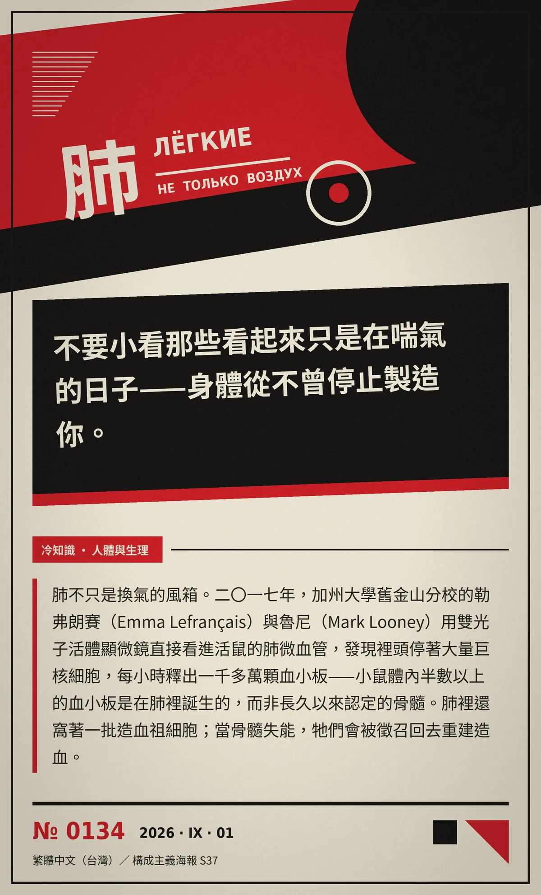

不要小看那些看起來只是在喘氣的日子——身體從不曾停止製造你。
肺不只是換氣的風箱。二〇一七年，加州大學舊金山分校的勒弗朗賽（Emma Lefrançais）與魯尼（Mark Looney）用雙光子活體顯微鏡直接看進活鼠的肺微血管，發現裡頭停著大量巨核細胞，每小時釋出一千多萬顆血小板——小鼠體內半數以上的血小板是在肺裡誕生的，而非長久以來認定的骨髓。肺裡還窩著一批造血祖細胞；當骨髓失能，牠們會被徵召回去重建造血。
冷知识由执笔的模型自行查证。逐条断言、来源与所引原句存档在纯文字副本里，未经程序逐字校验，留作事后核实。